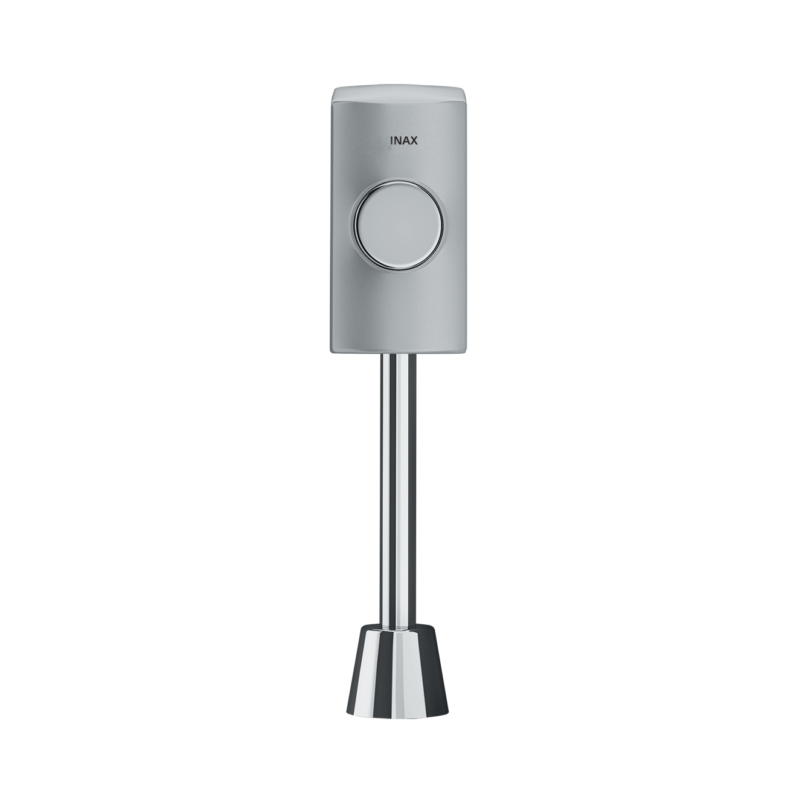
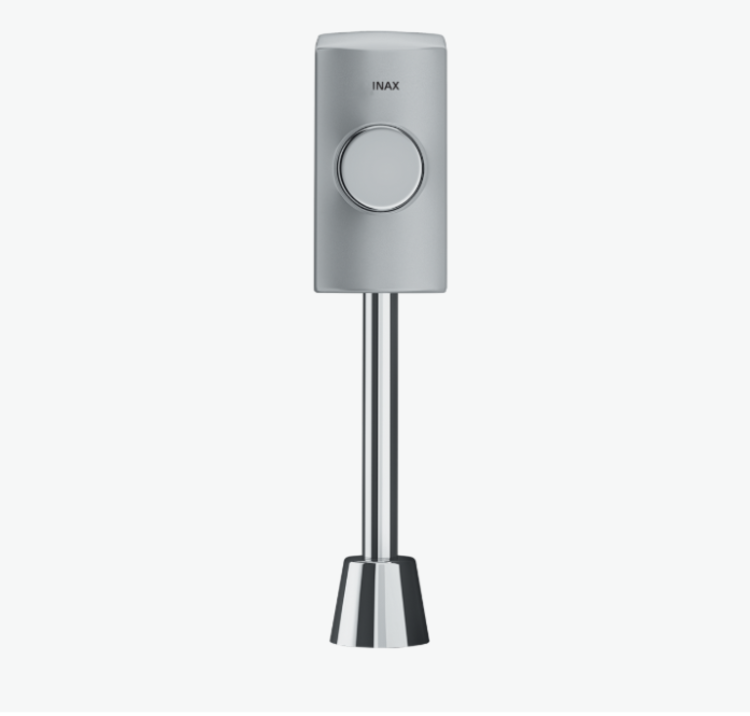
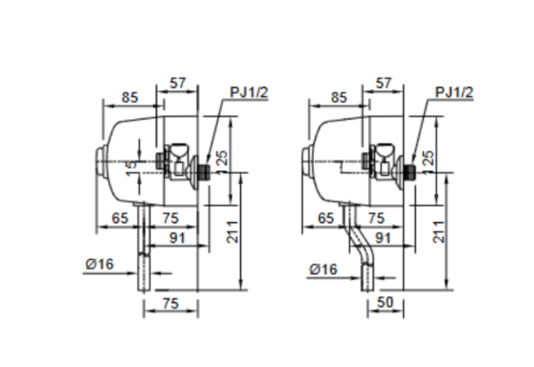

Van xả bồn tiểu INAX UF-3VS cung cấp giải pháp xả sạch mạnh mẽ, đáng tin cậy và tiết kiệm nước. Mang trong mình “tinh hoa công nghệ vệ sinh” từ thương hiệu INAX Nhật Bản, sản phẩm không chỉ là phụ kiện bồn tiểu nam mà còn là một khoản đầu tư thông minh, mang đến sự bền vững và vệ sinh tối ưu cho mọi thiết bị.Đặc điểm nổi bật của Van xả bồn tiểu UF-3VS- Kiểu van ấn ấn truyền thống có tính ổn định cao và độ bền tuyệt vời, đặc biệt quan trọng trong các khu vực có tần suất sử dụng liên tục và cường độ cao như nhà ga, trường học hay trung tâm thương mại.- Thân van xả ấn của bồn tiểu được chế tạo để chịu được hàng nghìn lần nhấn mà vẫn duy trì độ nhạy và chính xác. Cơ chế vận hành cơ học giúp loại bỏ mọi rủi ro liên quan đến điện tử, giảm thiểu tối đa sự cố hỏng hóc và nhu cầu bảo trì tốn kém.- Sẵn sàng hoạt động trong mọi điều kiện: Với khả năng tương thích với áp lực nước từ 0.07 đến 0.75 MPa, UF-3VS linh hoạt thích ứng với sự thay đổi của hệ thống cấp nước. Dù áp lực thấp hay cao, van xả vẫn đảm bảo thực hiện chức năng xả sạch một cách đồng đều và mạnh mẽ, mang lại sự an tâm tuyệt đối cho người quản lý cơ sở.- Hiệu suất tiết kiệm tối đa: Khi sử dụng đồng bộ với các thiết bị xả INAX tương thích, van này có khả năng giúp công trình tiết kiệm được tới 70% lượng nước xả. Con số 70% này không chỉ là một thống kê mà còn là sự giảm thiểu đáng kể trong chi phí vận hành hàng tháng, đặc biệt quan trọng đối với các tổ chức hoạt động dựa trên ngân sách.- Cung cấp lượng nước vừa đủ: Van xả được căn chỉnh chính xác để nhả ra lượng nước tối thiểu cần thiết, nhưng đủ mạnh để cuốn trôi hoàn toàn chất thải và cặn bẩn, giữ cho bồn tiểu luôn trong tình trạng sạch sẽ, không mùi.- Cải thiện trải nghiệm người dùng: Việc vận hành dễ dàng và hiệu quả xả sạch cao giúp nâng cao trải nghiệm vệ sinh tổng thể, tạo cảm giác chuyên nghiệp, sạch sẽ cho khách hàng và nhân viên sử dụng.Van xả bồn tiểu UF-3VS là sự kết hợp hoàn hảo giữa thiết kế cơ học đơn giản, sự bền bỉ đáng kinh ngạc và lợi ích tiết kiệm chi phí vượt trội. Đây là lựa chọn không thể thiếu cho bất kỳ công trình nào muốn hướng đến sự hiệu quả, kinh tế và chất lượng chuẩn mực Nhật Bản.Bản vẽ Van xả bồn tiểu UF-4VSThông số kỹ thuậtChất liệu-Kiểu vanKiểu ấnĐặc điểm- Áp lực nước 0.07 - 0.75 MPa - Thân van xả ấn của bồn tiểu - Tiết kiệm được 70% lượng nước xả khi sử dụng đồng bộ với van xả INAXThương hiệuINAXKhác- Hotline tư vấn và bảo hành: 18006633
Van xả bồn tiểu UF-3VS
Phụ kiện thương hiệu INAX.
Đã cập nhật danh sách yêu thích.
DANH MỤC: Phụ kiện
MÃ SẢN PHẨM: UF-3VS
DEPTH: mm
HEIGHT: mm
WIDTH: mm
Van xả bồn tiểu INAX UF-3VS cung cấp giải pháp xả sạch mạnh mẽ, đáng tin cậy và tiết kiệm nước. Mang trong mình “tinh hoa công nghệ vệ sinh” từ thương hiệu INAX Nhật Bản, sản phẩm không chỉ là phụ kiện bồn tiểu nam mà còn là một khoản đầu tư thông minh, mang đến sự bền vững và vệ sinh tối ưu cho mọi thiết bị.Đặc điểm nổi bật của Van xả bồn tiểu UF-3VS- Kiểu van ấn ấn truyền thống có tính ổn định cao và độ bền tuyệt vời, đặc biệt quan trọng trong các khu vực có tần suất sử dụng liên tục và cường độ cao như nhà ga, trường học hay trung tâm thương mại.- Thân van xả ấn của bồn tiểu được chế tạo để chịu được hàng nghìn lần nhấn mà vẫn duy trì độ nhạy và chính xác. Cơ chế vận hành cơ học giúp loại bỏ mọi rủi ro liên quan đến điện tử, giảm thiểu tối đa sự cố hỏng hóc và nhu cầu bảo trì tốn kém.- Sẵn sàng hoạt động trong mọi điều kiện: Với khả năng tương thích với áp lực nước từ 0.07 đến 0.75 MPa, UF-3VS linh hoạt thích ứng với sự thay đổi của hệ thống cấp nước. Dù áp lực thấp hay cao, van xả vẫn đảm bảo thực hiện chức năng xả sạch một cách đồng đều và mạnh mẽ, mang lại sự an tâm tuyệt đối cho người quản lý cơ sở.- Hiệu suất tiết kiệm tối đa: Khi sử dụng đồng bộ với các thiết bị xả INAX tương thích, van này có khả năng giúp công trình tiết kiệm được tới 70% lượng nước xả. Con số 70% này không chỉ là một thống kê mà còn là sự giảm thiểu đáng kể trong chi phí vận hành hàng tháng, đặc biệt quan trọng đối với các tổ chức hoạt động dựa trên ngân sách.- Cung cấp lượng nước vừa đủ: Van xả được căn chỉnh chính xác để nhả ra lượng nước tối thiểu cần thiết, nhưng đủ mạnh để cuốn trôi hoàn toàn chất thải và cặn bẩn, giữ cho bồn tiểu luôn trong tình trạng sạch sẽ, không mùi.- Cải thiện trải nghiệm người dùng: Việc vận hành dễ dàng và hiệu quả xả sạch cao giúp nâng cao trải nghiệm vệ sinh tổng thể, tạo cảm giác chuyên nghiệp, sạch sẽ cho khách hàng và nhân viên sử dụng.Van xả bồn tiểu UF-3VS là sự kết hợp hoàn hảo giữa thiết kế cơ học đơn giản, sự bền bỉ đáng kinh ngạc và lợi ích tiết kiệm chi phí vượt trội. Đây là lựa chọn không thể thiếu cho bất kỳ công trình nào muốn hướng đến sự hiệu quả, kinh tế và chất lượng chuẩn mực Nhật Bản.Bản vẽ Van xả bồn tiểu UF-4VSThông số kỹ thuậtChất liệu-Kiểu vanKiểu ấnĐặc điểm- Áp lực nước 0.07 - 0.75 MPa - Thân van xả ấn của bồn tiểu - Tiết kiệm được 70% lượng nước xả khi sử dụng đồng bộ với van xả INAXThương hiệuINAXKhác- Hotline tư vấn và bảo hành: 18006633
DANH MỤC: Phụ kiện
MÃ SẢN PHẨM: UF-3VS
DEPTH: mm
HEIGHT: mm
WIDTH: mm